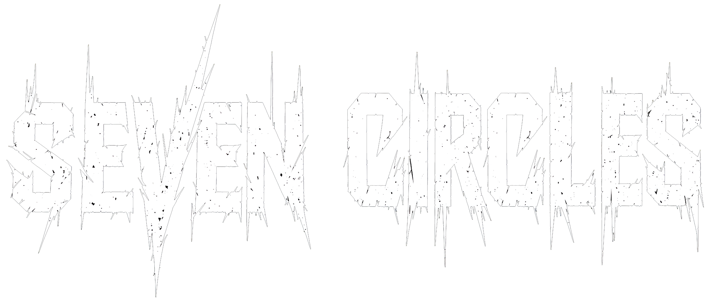
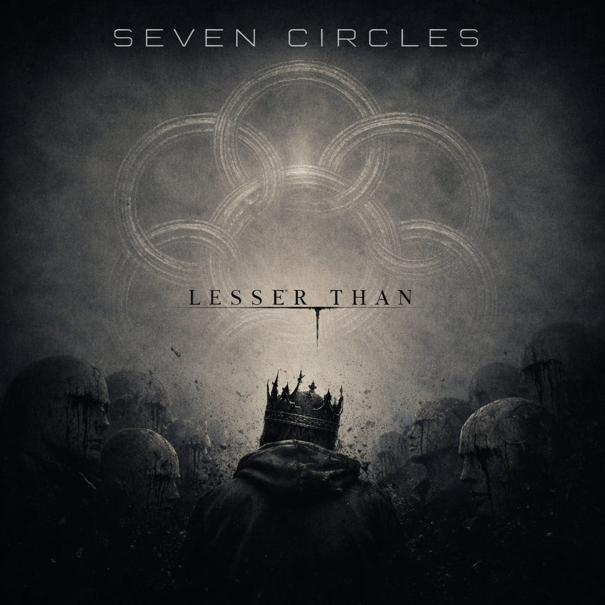

Exclusive Preview
"A glimpse into the wall of sound—low-tuned precision meets industrial groove atmosphere."
Seven Circles: Formed in 2025, Seven Circles was born out of a desire to treat extreme metal as a physical space rather than just a genre. Drawing heavy influence from the industrial pioneers of the 90s and the technical precision of the modern era, the band has cultivated a sound defined by low-tuned devastation and immersive, cinematic atmosphere. Following the philosophy of their name—abstract, ancient, and cyclical—the band's music avoids traditional tropes in favor of a "Wall of Sound" approach. Massive, high-gain distortion and mechanical grooves are layered with soaring melodic textures and intense, commanding vocals. The result is a specialized brand of extreme metal built for the modern age.
Download everything you need for promotion:
Hi-Res Press Photos (ZIP) Stage Plot / Technical Rider (PDF) Full Bio (PDF)Booking & Management: 7vencircles@gmail.com
General Inquiries: 7vencircles@gmail.com